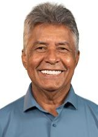

Acre
Quem ocupa os cargos hoje e quem assume em 2027.
Resultado provisórioTSE, capturado em 29/10/2026
Poder Executivo
Administra o governo e executa as leis: saúde, educação, segurança, estradas e o orçamento.
Governador
Gladson CameliPP · 242.100 votos · eleito em 2022✓ Reeleito›Quem comanda cada cidade do estado.
Poder Legislativo
Cria as leis, aprova o orçamento e fiscaliza o Executivo.
Senadores (3)
Alan RickUNIÃO · 154.312 votos · eleito em 2022★ Novato no Senado›Márcio BittarMDB · 185.066 votos★ Novato no Senado› PetecãoPSD · 244.109 votos · eleito em 2018✓ Reeleito›
PetecãoPSD · 244.109 votos · eleito em 2018✓ Reeleito›
Deputados federais (7)
Bancada federal por partido
7 cadeiras de Acre
- UNIÃO343%
- PP229%
- REPUBLICANOS229%
Do partido com mais cadeiras para o com menos, não por posição política. Cada partido usa a sua cor de marca.
Deputados federais (7): buscar e ver a lista
Deputados estaduais e distritais (24)
Assembleia por partido
24 cadeiras de Acre
- PDT417%
- MDB312%
- PP312%
- REPUBLICANOS312%
- PL28%
- PODE28%
- PSD28%
- UNIÃO28%
- PCDOB14%
- PSB14%
- PSDB14%
Do partido com mais cadeiras para o com menos, não por posição política. Cada partido usa a sua cor de marca.
Deputados estaduais e distritais (24): buscar e ver a lista
Os eleitos de cada cidade do estado.
Poder Judiciário
Julga os conflitos e garante que as leis sigam a Constituição.
Os desembargadores do Tribunal de Justiça e do Tribunal Regional Eleitoral. Não são eleitos.
Poder Executivo
Administra o governo e executa as leis: saúde, educação, segurança, estradas e o orçamento.
Governador
Mailza AssisPP · 272.635 votos★ Novato›Quem comanda cada cidade do estado.
Poder Legislativo
Cria as leis, aprova o orçamento e fiscaliza o Executivo.
Senadores (3)
Alan RickUNIÃO · 154.312 votos · eleito em 2022★ Novato no Senado›Mara RochaREPUBLICANOS · 157.104 votos★ Novato no Senado›Marcio BittarPL · 223.972 votos✓ Reeleito›Deputados federais (8)
Bancada federal por partido
8 cadeiras de Acre
- PP225%
- UNIÃO225%
- MDB112%
- PCDOB112%
- PL112%
- REPUBLICANOS112%
Do partido com mais cadeiras para o com menos, não por posição política. Cada partido usa a sua cor de marca.
Deputados federais (8): buscar e ver a lista
Deputados estaduais e distritais (24)
Assembleia por partido
24 cadeiras de Acre
- PP521%
- PL417%
- UNIÃO417%
- REPUBLICANOS312%
- MDB28%
- PSD28%
- NOVO14%
- PCDOB14%
- PDT14%
- PSDB14%
Do partido com mais cadeiras para o com menos, não por posição política. Cada partido usa a sua cor de marca.
Deputados estaduais e distritais (24): buscar e ver a lista

Antonio PedroPSD · 5.118 votos↺ Retorno›Arlenilson CunhaPL · 10.144 votos✓ Reeleito›Chiquinho do DudaPL · 11.514 votos★ Novato›Clodoaldo RodriguesPP · 13.575 votos✓ Reeleito›Eduardo RibeiroREPUBLICANOS · 11.282 votos✓ Reeleito›Edvaldo MagalhãesPCDOB · 9.273 votos✓ Reeleito›Emerson JarudeNOVO · 9.434 votos✓ Reeleito›Fagner CalegarioUNIÃO · 13.640 votos✓ Reeleito›Gene DinizREPUBLICANOS · 9.835 votos✓ Reeleito›Gláucio PedrosaPL · 8.029 votos★ Novato›Jailson AmorimPSD · 5.158 votos★ Novato›Leôncio CastroPSDB · 4.933 votos★ Novato›Manoel MoraesPP · 12.837 votos✓ Reeleito›Marcus AlexandreMDB · 12.872 votos★ Novato›Nicolau JúniorPP · 18.149 votos✓ Reeleito›Raimundo NenémPL · 8.069 votos★ Novato›Samir BestenePP · 11.335 votos★ Novato›Tadeu HassemREPUBLICANOS · 8.598 votos✓ Reeleito›Tanizio SáMDB · 12.023 votos✓ Reeleito›TchêPDT · 10.003 votos✓ Reeleito›Tio Pablo BregenseUNIÃO · 9.981 votos✓ Reeleito›Os eleitos de cada cidade do estado.
Poder Judiciário
Julga os conflitos e garante que as leis sigam a Constituição.
Os desembargadores do Tribunal de Justiça e do Tribunal Regional Eleitoral. Não são eleitos.
Como ler
★ Novato Primeiro mandato nesta casa (Câmara ou Senado).
✓ Reeleito Já estava no cargo e foi eleito de novo.
↺ Retorno Já teve mandato, mas estava fora.
Sem selo Não conseguimos ligar a pessoa a um mandato anterior. Isso não quer dizer que seja novata: simplesmente não afirmamos nada.
Provisório Só é confirmado na diplomação.